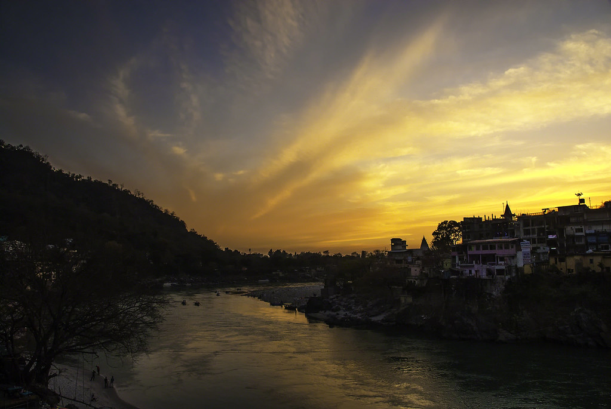
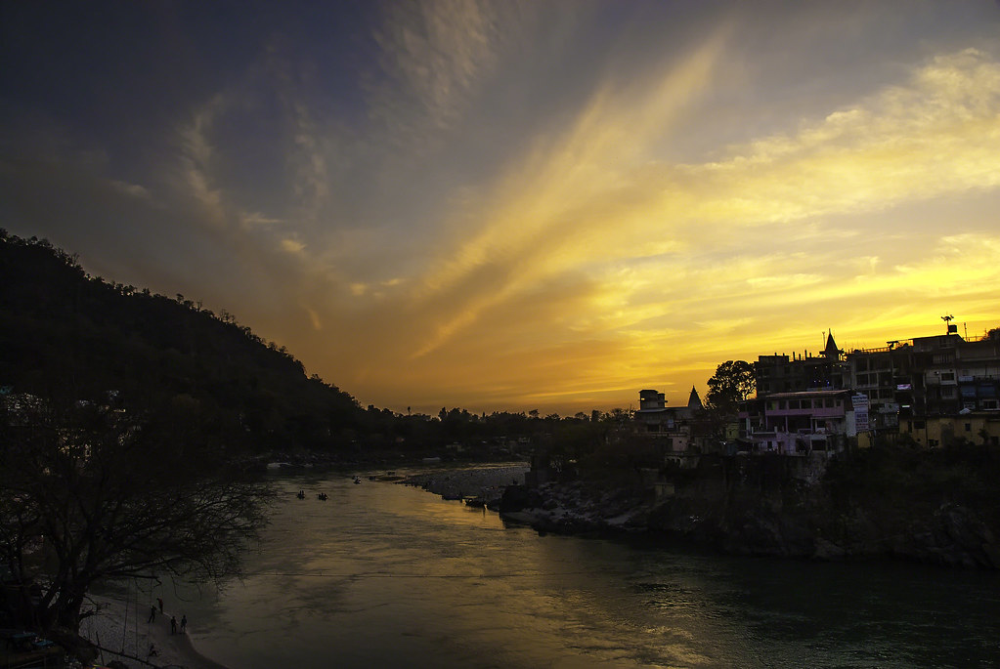

Introduction to Triveni Ghat
Triveni Ghat is one of the most significant and revered ghats in Rishikesh, located on the banks of the holy River Ganges.
The word "Triveni" refers to the confluence of three sacred rivers: the Ganges, Yamuna, and Saraswati. Triveni Ghat is a hub for religious rituals, spiritual practices, and cultural events.
It is believed that taking a dip in the holy waters of Triveni Ghat can cleanse one's sins and provide spiritual rejuvenation.
Cultural and Spiritual Significance
Triveni Ghat is not just a place for bathing, but a site of immense religious importance. Every evening, the Ganga Aarti is performed, drawing thousands of devotees and tourists. This mesmerizing ritual involves lighting lamps and chanting mantras as offerings to the River Ganges.
People from all over India come to Triveni Ghat for rituals, including Pind Daan for ancestors and prayers for the departed. It is also a place for spiritual seekers to meditate, find peace, and experience divine tranquility.
Notable Rituals at Triveni Ghat
- Ganga Aarti: A grand evening ritual performed every day, where devotees gather to chant, sing, and offer prayers to the Ganges.
- Pind Daan: A sacred offering made by individuals to honor their ancestors and seek their blessings.
- Holy Dip: Bathing in the holy waters of Triveni Ghat is believed to cleanse the soul and wash away past sins.
- Evening Meditation: Many people visit Triveni Ghat to meditate, offering them a peaceful atmosphere surrounded by the sound of flowing water and chanting.
Triveni Ghat - A Gateway to Rishikesh
Located in the heart of Rishikesh, Triveni Ghat serves as a gateway to exploring the spiritual and natural wonders of the city. It is a starting point for many tourists and pilgrims who venture to visit nearby temples, ashrams, and trekking spots.
The proximity to famous spots like Lakshman Jhula, Ram Jhula, and the many ashrams in Rishikesh makes it an essential part of anyone's spiritual journey.
Image Gallery
 

"Rishikesh is not just a place, it’s a journey of the soul. Triveni Ghat is where that journey begins." – EscapeAtlas